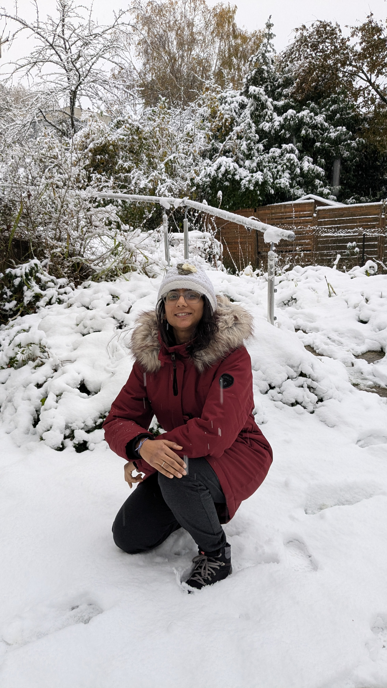

LinkedIn
Google Scholar
Github
Recent Updates
01-12-2024: Seeking
research position
in academia/industry
research position
in academia/industry
06-02-2024: Defended Thesis
21-07-2023: Colloquium
(Final Phd Presentation)
(Final Phd Presentation)
Sources
CV Google Scholar
Github
Welcome !
I am Prachi Singh, Research scholar working in the area of machine learning for speech processing.
I have worked on speech disentanglement of reverberated speech as Research Associate at Fraunhofer IIS, Germany till November 2024.
I have completed PhD from Indian Institute of Science, Bangalore under the supervision of Dr. Sriram Ganapathy at LEAP lab, IISc, in February 2024.
My Research focus during my PhD was on developing algorithms which can identify and thereby label different speakers in a multi-talker noisy speech audio just like humans can do seamlessly.
Research Interests:
Speaker Diarization, Signal Processing, Machine Learning, Variational Inference, Self-supervised Learning, Graph based Clustering.
Contact details
prachisingh AT iisc DOT ac DOT in